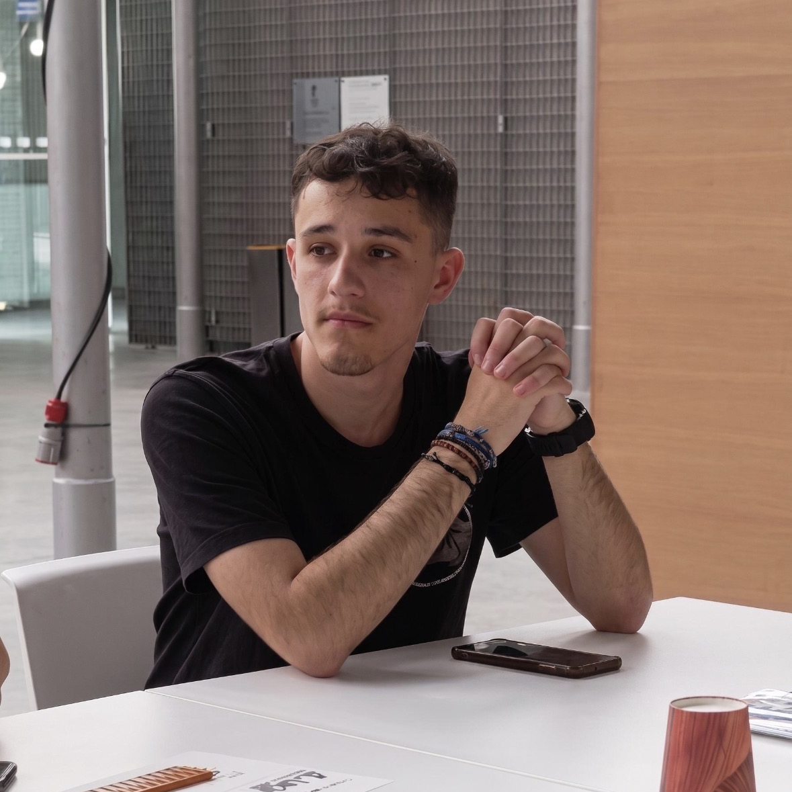
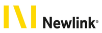
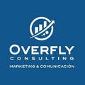
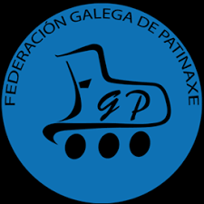
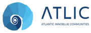
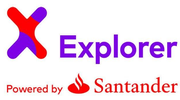
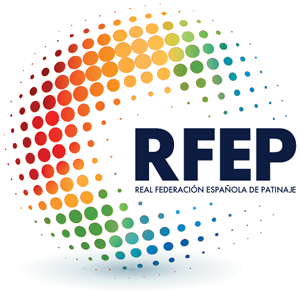
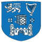

04 — Herramientas
Herramientas & tecnologías
Nodos dentro de una arquitectura digital aplicada a empresa, marketing y analítica. Pasa el cursor sobre cada herramienta.
Business · Technology · Digital Transformation
Estudiante de Empresa y Tecnología con experiencia en marketing digital y revenue management. Conecto estrategia, datos y tecnología para impulsar la transformación digital de los negocios.

Newlink Spain
Prácticas · Revenue Management
Overfly Consulting
Prácticas · Marketing Digital
USC — Grado Empresa y Tecnología
4º Curso · Lugo
01 — Sobre mí
Soy Sergio, estudiante de último curso de Empresa y Tecnología en la Universidad de Santiago de Compostela, con base en A Coruña y actualmente en Lugo.
Me interesa especialmente la intersección entre innovación, creatividad y estrategia empresarial, con un enfoque claro hacia el marketing y el desarrollo de negocio. A lo largo de mi formación, he participado en proyectos donde he potenciado habilidades como el pensamiento estratégico, el trabajo en equipo y el liderazgo, siempre buscando aportar soluciones con impacto real.
Actualmente compagino mis estudios con prácticas en marketing digital y revenue management, lo que me está permitiendo tener una visión práctica sobre cómo optimizar decisiones, entender al cliente y maximizar el rendimiento de los negocios en entornos competitivos.
Además, el deporte ha sido una parte clave de mi desarrollo personal. Como jugador y árbitro de hockey sobre patines, he aprendido la importancia de la disciplina, la toma de decisiones bajo presión y la colaboración, competencias que aplico de forma directa en el entorno profesional.
Mi objetivo es seguir creciendo en el ámbito de la empresa y el marketing, aportando una visión innovadora y tecnológica que contribuya al desarrollo de proyectos sólidos, creativos y orientados a resultados.
Planificación, coordinación y seguimiento de objetivos en entornos multidisciplinares.
Enfoque estructurado para identificar causas y proponer soluciones orientadas a resultados.
Experiencia real trabajando en proyectos europeos con equipos multiculturales.
Uso de herramientas tecnológicas aplicadas a empresa, marketing y analítica de datos.
Mentalidad orientada a la búsqueda de nuevas oportunidades y soluciones creativas.
Capacidad de trabajar y comunicarse en español, gallego e inglés.
02 — Experiencia
Módulos conectados de mi recorrido. Pasa el cursor sobre cada tarjeta para ver el detalle.

Newlink Spain
↧ Detalle
Colaboración en el departamento de revenue management en el sector hotelero, participando en la optimización de estrategias de precios y distribución. Elaboración de pick-ups y forecast de demanda, manejo de herramientas analíticas y apoyo en la definición de estrategias de pricing y gestión de canales. Participación en la gestión de reservas y análisis de datos para maximizar el rendimiento y la ocupación.

Overfly Consulting
↧ Detalle
Participación en proyectos de marketing digital enfocados al sector hotelero, desarrollando estrategias de SEO, planificación y creación de contenidos, así como análisis de competidores, estudio de palabras clave y detección de oportunidades de posicionamiento. Seguimiento de métricas y optimización continua de estrategias digitales para mejorar la visibilidad y el rendimiento online.

Federación Galega de Patinaxe
↧ Detalle
Dirección de partidos de hockey sobre patines en competiciones regionales, garantizando la imparcialidad y el cumplimiento de la normativa. Esta actividad ha reforzado competencias clave transferibles al entorno profesional.

Hockey Club Riazor
↧ Detalle
Planificación y ejecución de entrenamientos de hockey sobre patines, centrados en el desarrollo técnico y táctico de los jugadores. Dirección de partidos y seguimiento del rendimiento individual y colectivo, fomentando el trabajo en equipo y la mejora continua.
03 — Formación
Universidad de Santiago de Compostela — Campus de Lugo
Formación interdisciplinar que combina gestión empresarial, tecnología de la información e innovación. Actualmente cursando 4º curso.
IES Rafael Dieste — A Coruña
Modalidad de Humanidades y Ciencias Sociales.
04 — Herramientas
Nodos dentro de una arquitectura digital aplicada a empresa, marketing y analítica. Pasa el cursor sobre cada herramienta.
05 — Proyectos & certificaciones

Proyecto europeo de innovación y desarrollo de comunidades del Atlántico. Participación en iniciativas de colaboración internacional con equipos de distintos países, trabajando competencias de comunicación intercultural y gestión de proyectos en entornos multidisciplinares.
Proyecto Erasmus+ centrado en sostenibilidad y emprendimiento verde europeo. Obtención del Youthpass, certificado oficial de la Unión Europea que reconoce las competencias adquiridas en programas de educación no formal e intercambio juvenil.

Programa de exploración e innovación impulsado por Santander X, orientado al desarrollo de habilidades emprendedoras y la conexión con el ecosistema de startups y talento joven a nivel internacional.
Universidad de Santiago de Compostela
Universidad de Santiago de Compostela

Federación Galega de Patinaxe

Trinity College London
06 — Contacto
Estoy disponible para oportunidades profesionales, prácticas y proyectos de colaboración en los ámbitos de marketing digital, revenue management y tecnología empresarial.
sergio.cajide04@gmail.com
Teléfono
+34 609 332 572
Ubicación
A Coruña, Galicia
Sergio Cajide Gómez
Disponible para nuevas oportunidades